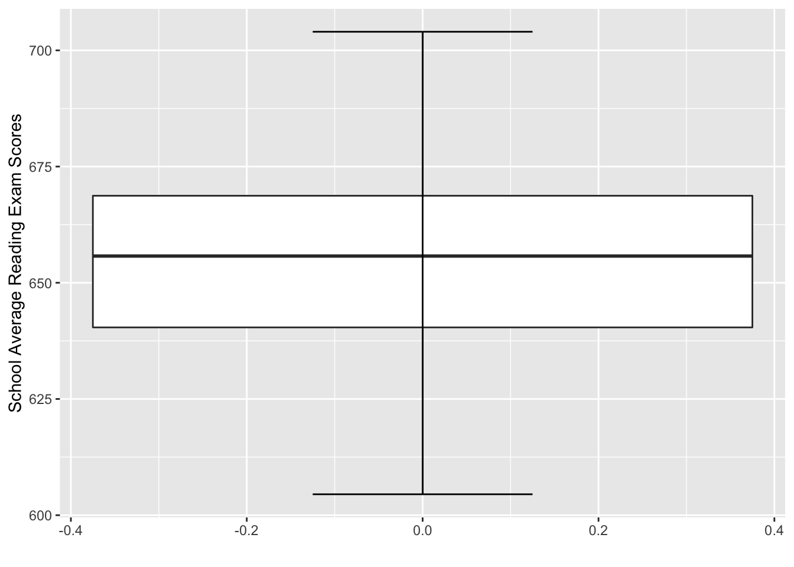
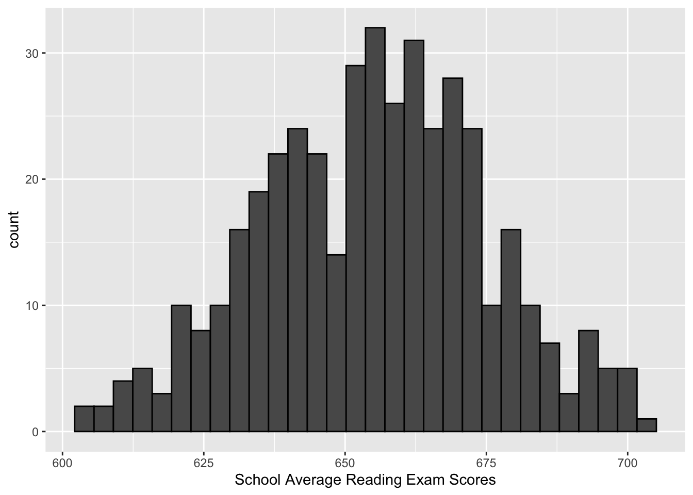
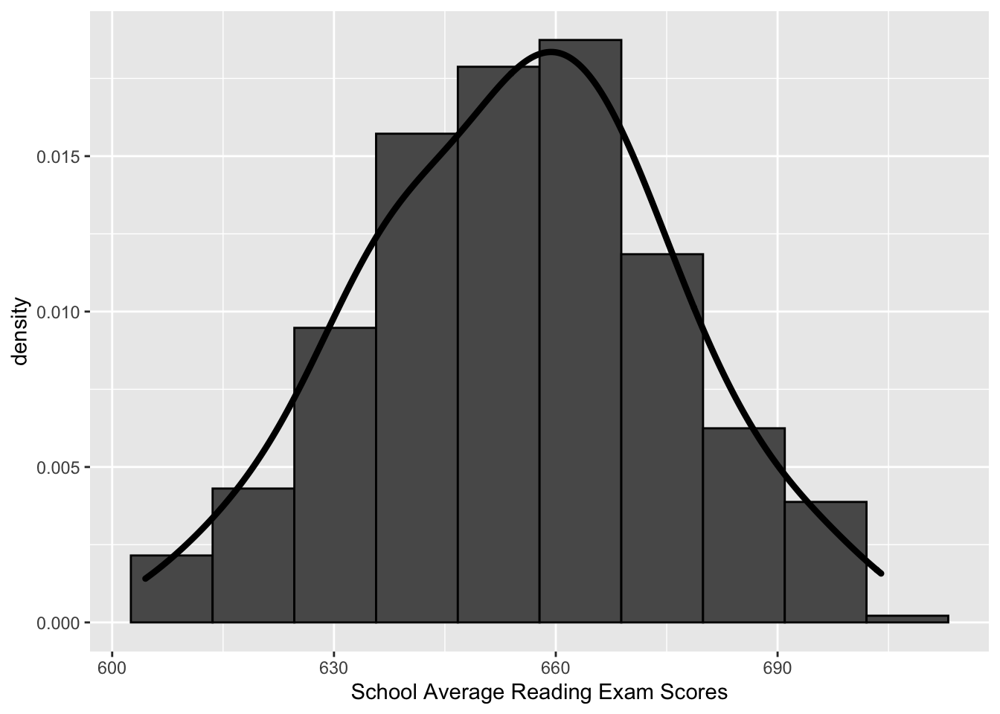

library(AER)
data("CASchools")Assignment2_Q1
head(CASchools) district school county grades students teachers
1 75119 Sunol Glen Unified Alameda KK-08 195 10.90
2 61499 Manzanita Elementary Butte KK-08 240 11.15
3 61549 Thermalito Union Elementary Butte KK-08 1550 82.90
4 61457 Golden Feather Union Elementary Butte KK-08 243 14.00
5 61523 Palermo Union Elementary Butte KK-08 1335 71.50
6 62042 Burrel Union Elementary Fresno KK-08 137 6.40
calworks lunch computer expenditure income english read math
1 0.5102 2.0408 67 6384.911 22.690001 0.000000 691.6 690.0
2 15.4167 47.9167 101 5099.381 9.824000 4.583333 660.5 661.9
3 55.0323 76.3226 169 5501.955 8.978000 30.000002 636.3 650.9
4 36.4754 77.0492 85 7101.831 8.978000 0.000000 651.9 643.5
5 33.1086 78.4270 171 5235.988 9.080333 13.857677 641.8 639.9
6 12.3188 86.9565 25 5580.147 10.415000 12.408759 605.7 605.4str(CASchools)'data.frame': 420 obs. of 14 variables:
$ district : chr "75119" "61499" "61549" "61457" ...
$ school : chr "Sunol Glen Unified" "Manzanita Elementary" "Thermalito Union Elementary" "Golden Feather Union Elementary" ...
$ county : Factor w/ 45 levels "Alameda","Butte",..: 1 2 2 2 2 6 29 11 6 25 ...
$ grades : Factor w/ 2 levels "KK-06","KK-08": 2 2 2 2 2 2 2 2 2 1 ...
$ students : num 195 240 1550 243 1335 ...
$ teachers : num 10.9 11.1 82.9 14 71.5 ...
$ calworks : num 0.51 15.42 55.03 36.48 33.11 ...
$ lunch : num 2.04 47.92 76.32 77.05 78.43 ...
$ computer : num 67 101 169 85 171 25 28 66 35 0 ...
$ expenditure: num 6385 5099 5502 7102 5236 ...
$ income : num 22.69 9.82 8.98 8.98 9.08 ...
$ english : num 0 4.58 30 0 13.86 ...
$ read : num 692 660 636 652 642 ...
$ math : num 690 662 651 644 640 ...help("CASchools")a. Create a new tibble named CASchools_A2 to use for this assignment from the data.frame CASchools. Show that your object is of the correct class by showing the output of class(CASchools_A2) in your answer.
library(tidyverse)
CASchools_A2 <- as_tibble(CASchools)class(CASchools_A2)[1] "tbl_df" "tbl" "data.frame"b. Create a boxplot and a histogram (using one or two figures, either way is fine) of the school average reading exam scores. Describe the distribution of reading scores in a few sentences. What is one important advantage that the histogram has over the boxplot for this particular dataset?
ggplot(CASchools_A2, aes(x=NULL, y=read)) +
geom_boxplot() + xlab("") +
ylab("School Average Reading Exam Scores") +
stat_boxplot(geom="errorbar", width=0.25)
ggplot(CASchools_A2, aes(x=read)) +
geom_histogram(col="black", bins=30) +
xlab("School Average Reading Exam Scores")
By plotting the read score data, we can see that its medium is approximatly 655 from the boxplot. Moreover, 50% of the data is in between approximately 640 to 670. The min is around 605 and the max is around 705. There seem to be no outliers from the boxplot. From the histogram, we can also see the approximate min and max. However, we are not able to easily see the 25%-ile, 75%-ile and the medium compared to the boxplot. Instead, we do get a better sense of the overall distribution of the data. We can also tell that there seems to be two central locations, one centered around 640 and another around 662. Overall, we can also see that the data is not too spread out.
One important advantage that the histogram has over the boxplot for this particular dataset is that the histogram better demonstrates the shape or known as the distribution of the data. From the histogram, we can have a better sense of the count for each score range. Overall, it allows us to better access the shape, skew and spread of the data.
c. Remake just the histogram from part (b) with the following characteristics:
with a y-axis that is not the counts of bins, but instead the density;
using only 10 bins instead of the default 30;
containing also a density line that has approximate smoothness similar to the histogram (note: you can just experiment and it does not need to be perfect).
ggplot(CASchools_A2, aes(x=read)) +
geom_histogram(aes(y=..density..), bins=10, col="black") +
xlab("School Average Reading Exam Scores") +
geom_density(size=1.5, adjust=1.5)
Explain one advantage and one disadvantage of using fewer bins and a more smoothed density for this particular dataset.
For this particular dataset, one advantage of having a fewer bins and a more smoothed density is that it better conveys the message that this dataset is normally distributed and it centers around 655. However, the disadvantage of this is that we are losing information or details about this dataset. For example, in the less smoothed, more bins version, we can see that it almost has two concentrations, one around 640 and another one around 662), and this information is lost in the new graph.